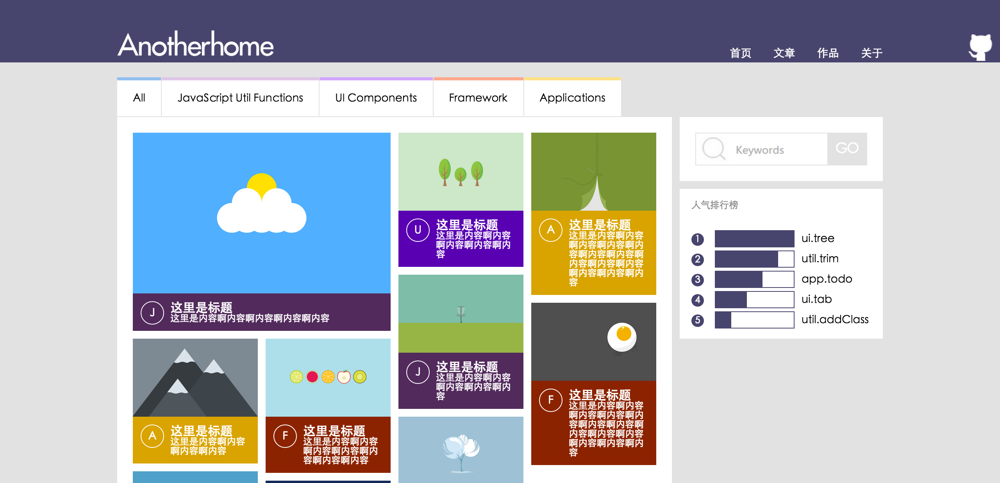
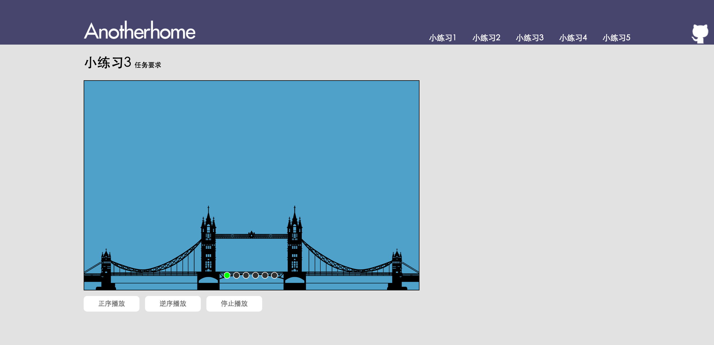
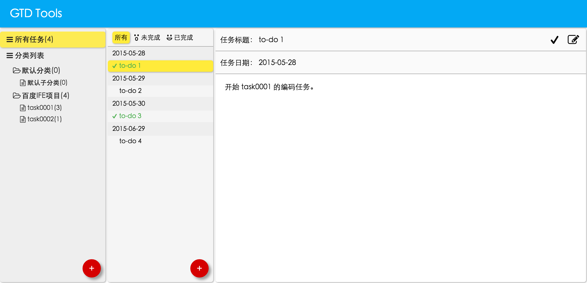

-
- Experience. 项目经验
Web前端
-
Anotherhome个人博客 https://www.anotherhome.net
Wordpress主题修改（主要修改了 HTML CSS 部分，重构部分代码），内容维护，现日均PV 2000+
-
参加由百度EFE团队组织的百度Web前端技术学院 https://github.com/DIYgod/ife-work
-
Task 0001 https://github.com/DIYgod/ife-work/tree/master/task0001
基于设计稿实现的静态页
 -
Task 0002 https://github.com/DIYgod/ife-work/tree/master/task0002
输入交互 倒计时 轮播图 输入提示框 界面拖拽交互
 -
Task 0003 https://github.com/DIYgod/ife-work/tree/master/task0003
一个简单的GTD Tools (个人任务管理系统)

-
其他
-
Show Me the Code Python version https://github.com/Show-Me-the-Code/python/tree/master/DIYgod
一系列Python小程序，包括 图像处理 数据库 文件操作 正则式 等内容。
-
Simple-C Compiler https://github.com/DIYgod/Compiler
一个用C编写的简单类C语言编译器，但目前只完成了 词法分析 语法分析 阶段，使用了 Lex Yacc 两个工具。
-
EasyGoAgent https://github.com/DIYgod/EasyGoAgent
开箱即用 & 在线更新的GoAgent，GitHub 上 Star 117 Fork 31。
-
WHUTNews https://github.com/DIYgod/WHUTNews
Python 编写的爬取教务处公告，判断是否有新通知，并把新通知发邮件提醒的简单 Python 爬虫程序。
-
- Skill. 技能清单
Web前端
-
HTML / CSS
能够编写语义化的 HTML，模块化的 CSS，完成较复杂的布局。
熟悉已标准化的 HTML5 / CSS3 新特性。
-
JavaScript
熟悉原生Javascript，能脱离jQuery等类库编码。
能运用模块化、面向对象的方式编程。
了解jQuery 和 AngularJS ，但暂时没有实际项目经验。
后端
-
环境
熟悉 Linux 开发环境 Linux 服务器环境搭建部署，能编写简单的 bash 脚本，两年 Linux 日常使用经验。
了解 Apache web 服务器，一年建站经验。
-
语言
熟悉 Python，能够实现简单的爬虫、数据及图像处理工具、自动化脚本。
熟悉 C，读过《C Primer Plus》，能编写简单的解释器。
熟悉 Java，能进行简单的网络编程和多线程编程。
其他
-
掌握 Vim Git 等开发工具的使用。
能够熟练使用 Markdown 进行写作。
严重强迫症，不能忍受界面一个像素的偏差，同样不能忍受代码格式一个空格的偏差。
吃苦耐劳，每天坚持自习4个小时以上，晚上自习到宿舍楼关门。
学习能力强，以上绝大多数的技能都是大三转专业之后的半年多时间自学修得的。
在线版简历：https://www.anotherhome.net/resume